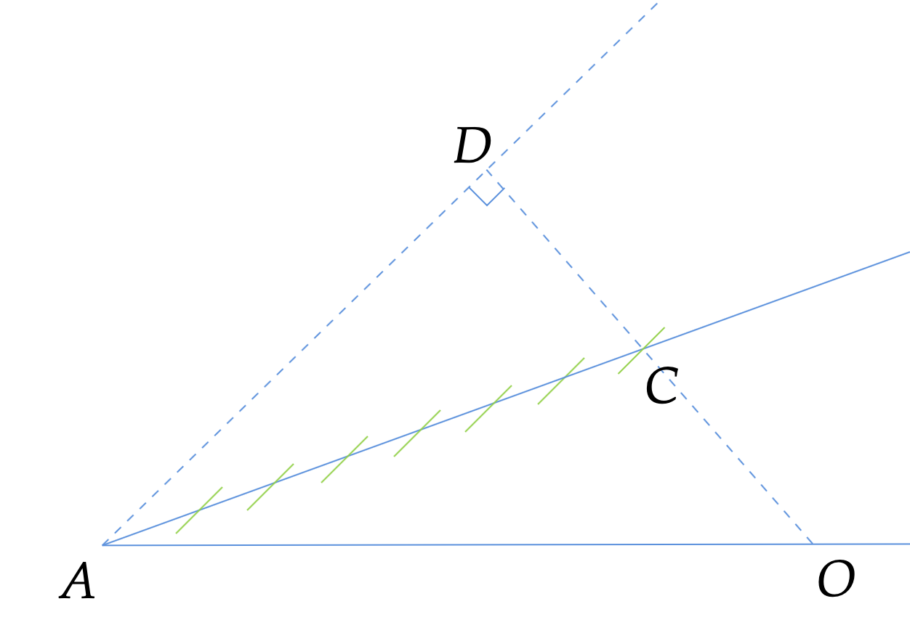
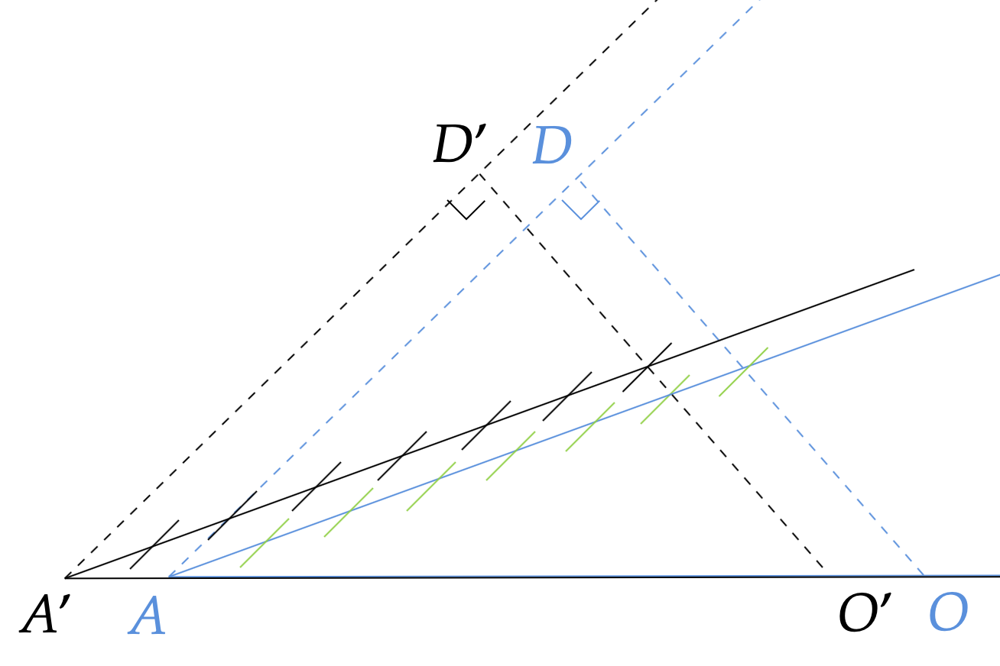
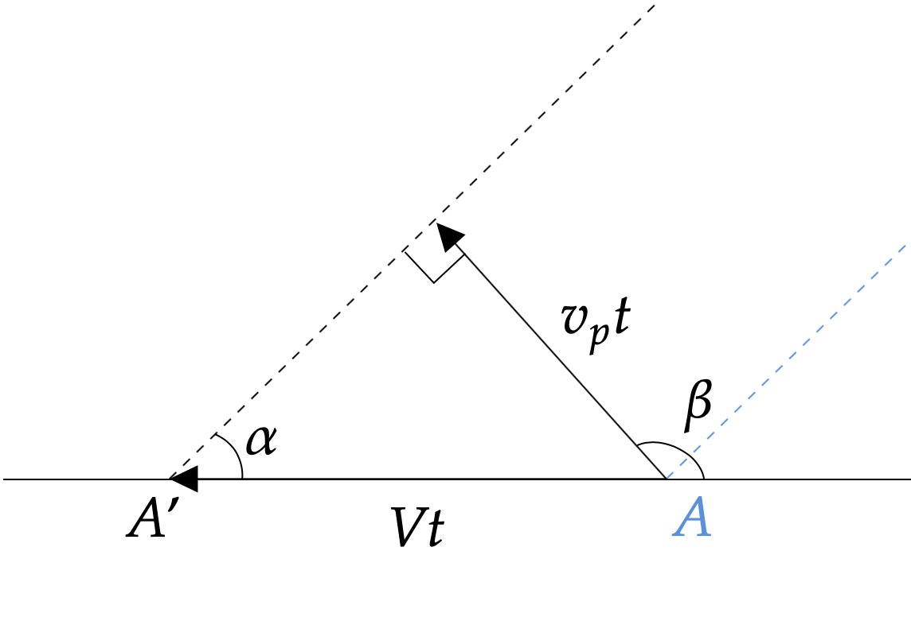
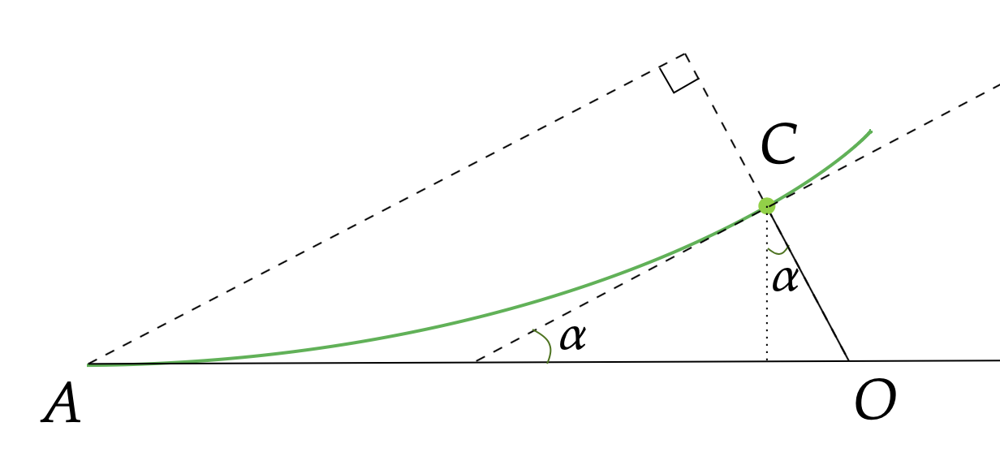
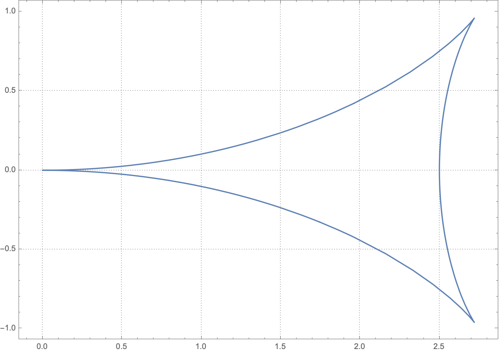
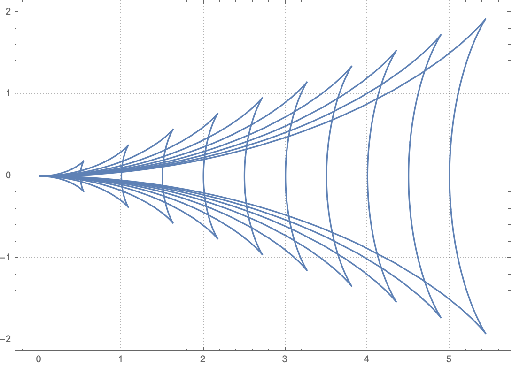

Introduction
Kelvin wake is the pattern generated by objects moving through deep waters at a constant speed.

In Feynman’s lecture 1, he mentioned that if one is clever enough, one can derive the Kelvin wake pattern from the fact that the pattern of the waves is stationary relative to the constant velocity of the boat; any other pattern would get lost from the boat. This post attempts to lay out the details of this derivation.
Phase Velocity and Group Velocity
Here I assume the reader has a basic understanding of the phase velocity and group velocity.
The phase velocity is the velocity at which the actual wave amplitudes travel, and the group velocity is the velocity at which the wave groups travel. The group velocity for water goes half as fast as the phase. This means, if one follows a particular crest of the water waves, they will find it moves forward in the group and gradually gets weaker and dies out in the front, and a weaker one in the back appears mysteriously and gets stronger, as show in the following demonstration:

Water Waves
I will also take as a given the wave velocities in deep water:
\[\begin{aligned} v_{phase}&=\frac{\omega}{k}=\sqrt{\frac{g\lambda}{2\pi}}=\sqrt{\frac{g}{k}}, \\ v_{group}&=\frac{d \omega}{d k}=\frac{1}{2}\sqrt{\frac{g\lambda}{2\pi}}=\frac{1}{2}\sqrt{\frac{g}{k}}. \end{aligned}\]
Notice that the phase velocity is twice the group velocity.
If you’re interested, a simple explanation of the above formula is given by Feynman in his physics lectures 2.
Derivation of the Kelvin Wake Pattern
The derivation follows 4 steps:
A general sketch of wavefronts for a certain wave length
Because the group velocity is half of the phase velocity, we can construct the following general propagation pattern:

The boat is at point A. For a certain wavelength, AD is where the wavefront would be for the phase velocity and because the group velocity is half of the phase velocity, AC is where the group of waves propagates to. The green lines are all parallel to AD and mark the phase wavefront on AC.
Only waves with certain velocities in certain directions are stationary relative to the boat
This can be seen by moving the wavefront pattern sketched above horizontally.

This procedure ensures that the wavefront pattern is stationary with respect to the boat (point A and point A’). Because the wavefront pattern’s construction is solely dependent on the phase velocity wavefront (the dashed line AD), we just have to make sure that AD propagates to A’D’ when A moves to A’:

In other words, in any specific direction, only waves that have a certain phase velocity so that
\[v_p=V \sin\alpha,\]
where \(V\) is the speed of the boat, will be “dragged along” by the boat. In the following discussion, we will only be using waves that satisfy this condition.
Connect “stationary” waves that are at the same phase to form equal-phase wavefronts
To derive the wave pattern, we need to trace out “equal-phase lines” that connect wavefronts of the same phase.

Every point on the equal-phase line (depicted as green in the above plot) originates from a different point on the horizontal line. Let’s pick the point O as the origin, for example, and the phase at point C can be calculated as
\[\phi = \frac{OC}{k_p} = \frac{v_p t}{2 k} = \frac{gt}{2 v_p},\]
where \(t\) is the time the boat takes to go from O to A.
On this equal-phase line, this phase remains constant, so now we can use this relation, together with the fact that \(v_p=V \sin \alpha\), to rewrite the x, y coordinates of point C:
\[\begin{aligned} x &= Vt - \frac{1}{2}v_p t \sin \alpha \\ &= Vt - \frac{1}{2}Vt \sin^2 \alpha \\ &= Vt \left(1- \frac{1}{2} \sin^2 \alpha \right) \\ &= \frac{2\phi V^2}{g} \sin \alpha \left(1- \frac{1}{2} \sin^2 \alpha \right) \\ \\ y &= \frac{1}{2}v_p t \cos \alpha \\ &= \frac{Vt}{2} \sin \alpha \cos \alpha \\ &= \frac{\phi V^2}{g} \sin^2 \alpha \cos \alpha \\ \end{aligned}\]
Now that x and y are written in terms of the parameter \(\alpha\) and the constant \(\phi\), we can plot the equal-phase line in mathematica:

Composite all equal phase lines that are separated by \(2\pi\)
The peaks of waves are separated by \(2\pi\). Since the waves at the front of the boat (point A) are always at the peak, which has the phase of 0, the peaks of waves are at \(\phi = 2\pi n\), where \(n\) is any positive integer. Overlaying all equal-phase lines with \(\phi = 2\pi n\), we see that the peaks of waves form the famous “Kelvin Wake” pattern:

Incidentally, the waves propagating in the X-axis direction have to have the speed of \(v_p=V\) to remain stationary relative to the boat. The wavelength is therefore \(\lambda_0 = 2\pi V^2/g\). For these waves, we can plug \(\alpha=\pi/2\) into the x coordinates and see that indeed the x coordinates of the peaks \(x=\phi V^2/g = 2\pi n V^2/g = n\lambda_0\) are separated by \(2\pi\).
Kelvin Wake Angle
Now that we’ve derived the wake pattern, it should be straightforward to derive the famous Kelvin Wake angle. I will leave this as an exercise to the readers. In fact, we don’t even need to have the full wake pattern to derive the Kelvin Wake angle. By noticing that this angle is the largest angle that can be formed by the line connecting the boat and the wave propagating in a certain direction whose group velocity follows \(v_g=\frac{v_p}{2}=\frac{1}{2}V \sin \alpha\), we can immediately get the Kelvin Wake angle as \(\theta=\arctan \sqrt{2} - \arctan \frac{\sqrt{2}}{2}= 19.7^{\circ}\).
Final Words
Notice that the speed of the boat only changes the spacing between the peaks, but the general pattern remains the same. For Kelvin Wake’s pattern construction that takes into account the size of the boat, the readers are referred to this more advanced research 3.
Appendix
Minute Physics has done a very nice illustration of the wake pattern formation:
{% include youtube.html content=“https://youtu.be/95sQcSulRFM” %}